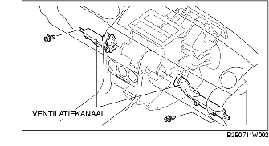

VERWIJDEREN/PLAATSEN AIRCO-UNIT
B3E071161130W01
1. Neem de minkabel van de accu los.
2. Tap het koudemiddel af. (Zie BIJVULLEN KOUDEMIDDEL.)
3. Tap de koelvloeistof af. (Zie KOELVLOEISTOF VERVANGEN.)
4. Neem de onderdelen in de aangegeven volgorde los van de airco-unit, zie de tabel.
-
Opmerking
-
• Als er vocht of verontreinigingen in het koelcircuit komen, zal het koelende vermogen afnemen en kan het systeem abnormale geluiden produceren of kunnen er andere storingen optreden. Plaats direct pluggen na het verwijderen van onderdelen van het koelcircuit.
|
1
|
Slang (lagedrukzijde)
|
|
2
|
Aircoleiding
|
|
3
|
Verwarmingsslang
|
5. Verwijder de volgende onderdelen:
-
(1) Voorportieren (Zie VERWIJDEREN/PLAATSEN VOORPORTIER.)
-
(2) Asbakpaneel (Zie VERWIJDEREN/PLAATSEN MIDDENCONSOLE.)
-
(3) Middenconsole (Zie VERWIJDEREN/PLAATSEN MIDDENCONSOLE.)
-
(4) Versnellingspook (MTX) (Zie VERWIJDEREN/PLAATSEN BEDIENINGSMECHANISME TRANSMISSIE.)
-
(5) Selectiehendel (ATX) (Zie VERWIJDEREN/PLAATSEN SELECTIEHENDEL.)
-
(6) Sierlijst (Zie VERWIJDEREN/PLAATSEN SIERLIJST.)
-
(7) Dorpellijst vóór (Zie VERWIJDEREN/PLAATSEN DORPELLIJST VOOR.)
-
(8) Zijpaneel vóór (Zie VERWIJDEREN/PLAATSEN ZIJPANEEL VOOR.)
-
(9) Dashboardkastje (Zie VERWIJDEREN/PLAATSEN DASHBOARDKASTJE.)
-
(10) Ventilatiekanalen (links, rechts)

-
(11) Verbindingsblok passagierszijde (Zie VERWIJDEREN/PLAATSEN VERBINDINGSBLOK PASSAGIERSZIJDE.)
-
(12) Onderpaneel (Zie VERWIJDEREN/PLAATSEN ONDERPANEEL.)
-
(13) Stuurkolomafdekking (Zie VERWIJDEREN/PLAATSEN STUURKOLOMAFDEKKING.)
-
(14) Stuuras (Zie VERWIJDEREN/PLAATSEN STUURWIEL EN -KOLOM.)
-
(15) A-stijlbekleding (Zie VERWIJDEREN/PLAATSEN A-STIJLBEKLEDING.)
-
(16) Bedieningsunit middenconsole (Zie VERWIJDEREN/PLAATSEN BEDIENINGSUNIT MIDDENCONSOLE.)
-
(17) Ruitenwisserarm en -blad (Zie VERWIJDEREN/PLAATSEN WISSERARM EN -BLAD.)
-
(18) Paravan (Zie VERWIJDEREN/PLAATSEN PARAVAN.)
-
(19) Schutbord (Zie VERWIJDEREN/PLAATSEN PARAVAN.)
-
(20) Ruitenwissermotor (Zie VERWIJDEREN/PLAATSEN RUITENWISSERMOTOR VÓÓR.)
6. Verwijder de bevestigingsmoer van de airco-unit vanuit de motorruimte en verwijder de airco-unit.
-
Opmerking
-
• Als er vocht of verontreinigingen in het koelcircuit komen, zal het koelende vermogen afnemen en kan het systeem abnormale geluiden produceren of kunnen er andere storingen optreden. Plaats direct pluggen na het verwijderen van onderdelen van het koelcircuit.
7. Verwijder het verwarmingskanaal naar het achtercompartiment.
8. Neem de afvoerslang los van de airco-unit.
9. Verwijder de moeren en de bouten waarmee het dashboard aan de carrosserie is bevestigd.
10. Verwijder het dashboard met de airco-unit. (Zie VERWIJDEREN/PLAATSEN DASHBOARD.)
11. Neem de kabel luchttemperatuur los van de hevel en de klem. (Handbediende airconditioning)
12. Neem de kabel luchtcirculatie los van de bedieningsschijf en de klem. (Handbediende airconditioning)
13. Neem de volgende stekkers los:
-
- Stekker aanjagermotor
-
- Stekker vermogenstransistor (automatische airconditioning)
-
- Stekker thermosensor verdamper
-
- Stekker servo luchttoevoer
-
- Stekker servo luchttemperatuur (automatische airconditioning)
-
- Stekker servo luchtcirculatie (automatische airconditioning)
-
- Stekker weerstand (Handbediende airconditioning)
14. Verwijder het verwarmingshuis.
15. Verwijder de moeren en de bouten waarmee de airco-unit aan het dashboard is bevestigd.
Aanwijzing voor plaatsen - airco-unit
1. Voeg bij het plaatsen van een nieuwe airco-unit of verdamper compressorolie toe aan het koelcircuit.
-
Toe te voegen hoeveelheid olie (globaal)
-
25 ml {25 cc, 0,8 fl oz}